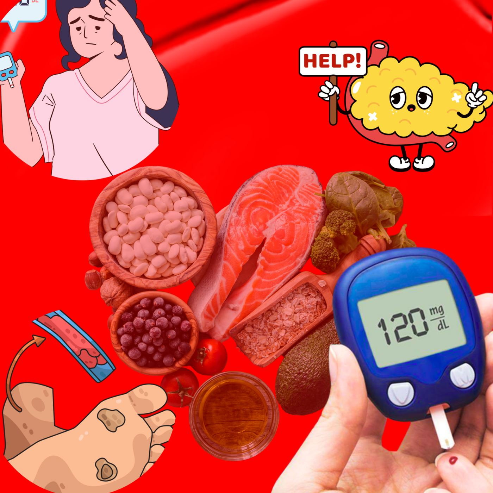

Signes discrets d'un diabète mal contrôlé
Se sentir bien au quotidien ne veut pas toujours dire que la glycémie est là où elle devrait être. Le diabète peut se dérégler discrètement, bien avant qu'un symptôme marquant n'attire l'attention — c'est pourquoi il est utile de connaître les signes plus subtils.
Signes à surveiller
- Une fatigue qui ne s'améliore pas avec le repos
- Une vision floue qui va et vient, surtout après les repas
- Des coupures, plaies ou infections qui mettent plus de temps que d'habitude à cicatriser
- Des picotements, un engourdissement ou une sensation de brûlure dans les pieds ou les mains
- Une soif et des envies d'uriner la nuit qui reviennent
- Des infections cutanées, gingivales ou urinaires récurrentes
- Une perte de poids inexpliquée malgré une alimentation normale
- Une peau sèche qui démange, ou des gencives qui saignent plus facilement au brossage
Aucun de ces signes, pris isolément, ne confirme un mauvais contrôle, mais si l'un ou plusieurs d'entre eux font désormais partie de votre quotidien, mieux vaut faire vérifier vos chiffres plutôt que de supposer que cela passera.
Pourquoi ces signes passent souvent inaperçus
La glycémie peut rester plus élevée qu'elle ne devrait pendant des mois sans provoquer de symptôme évident — le corps s'adapte, et le quotidien continue normalement. C'est précisément ainsi que des dommages silencieux s'installent : au niveau des petits vaisseaux sanguins des yeux et des reins, et au niveau des nerfs des pieds et des mains. Le temps que les symptômes deviennent nettement perceptibles, une partie de ces dommages peut déjà être en cours. Se sentir bien est rassurant, mais cela ne signifie pas que le diabète est bien contrôlé — seule une prise de sang peut le confirmer.
Que faire si vous remarquez ces signes
Un dosage de l'HbA1c reflète la glycémie moyenne des deux à trois derniers mois et reste le moyen le plus fiable de vérifier le contrôle, en complément d'un bilan de la fonction rénale et du cholestérol. Si vous êtes déjà sous traitement, ces signes discrets indiquent souvent qu'un ajustement de vos médicaments ou de votre dose d'insuline est nécessaire — ce n'est pas un échec, simplement une étape normale dans la prise en charge d'une maladie qui évolue avec le temps. Repérer ce dérèglement tôt permet généralement un ajustement simple ; attendre revient souvent à devoir en faire un plus important.
Si l'un de ces signes vous semble familier, ou si cela fait un moment que vous n'avez pas vérifié votre HbA1c, il est préférable de prendre rendez-vous plutôt que d'attendre votre prochaine consultation prévue.
Une question sur vos propres symptômes ? Contactez-nous directement.
Écrire sur WhatsAppCet article fournit des informations générales sur la santé et ne remplace pas une consultation médicale. En cas d'urgence médicale, appelez le SAMU (114) ou rendez-vous à l'hôpital le plus proche.